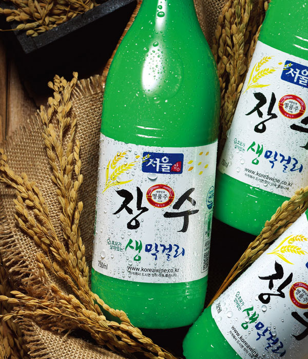

- 서울탁주제조협회
- 회원사제조장
- 서울탁주홍보영상
- 찾아오시는 길
서울탁주제조협회
1962년 2월 1일에 설립된 국내탁주업계 최대(最大), 최고(最古)의 탁주제조업 단체입니다.
본 협회는 주세 보전에 협력하고 탁주 유통질서의 확립 및 부정탁주 척결에 앞장서 왔으며 더불어 식품공학(미생물학, 발효공학, 양조학 등)을 전공한 우수한 연구원으로 구성된 실험개발실을 운영하면서 막걸리의 품질개선, 상품성 제고, 신제품 개발 및 막걸리 제조시설의 현대화 등에 부단한 연구와 노력을 경주하고 있습니다.
과거의 대형 말통용기나 탱크로리에 의한 비위생적인 유통구조에서 탈피하게 되었고 연구 개발을 통해 오늘 날 막걸리 유통의 대세가 된 PET 병입 막걸리를 탄생시켰으며 나아가 장기보관과 수출에 용이한 캔 막걸리도 만들어냈습니다.
막걸리 제조에서도 최신 컴퓨터 제어 시스템에 의한 자동 제국기를 도입, 설치하고, 주원료도 백미만을 사용함으로써 사계절 변함없는 고품질의 고급막걸리를 공급하고 있습니다. 서울탁주제조협회의 이런 노력은 서울 장수 생막걸리가 명품주로 인정받음으로써 결실을 거두게 되었습니다.
서울탁주는 앞으로도 우리민족의 전통주의 계승은 물론, 신세대의 입맛에 맞는 신제품을 연구, 개발해 나아갈 것을 약속드리며 21세기를 향해 새롭게 도약할 것 입니다.

서울탁주제조협회
회원사 제조장